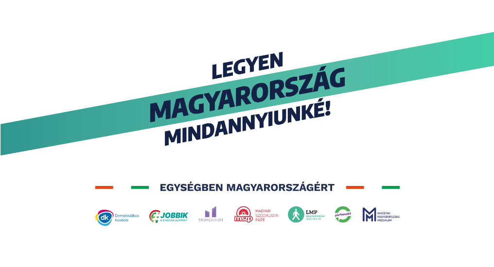

Voksturizmus-figyelő
A Fidesz novemberben sunyi módon, egy salátatörvénybe rejtve lényegében legalizálta a voksturizmust. Ezzel egy-egy lakásba tömegesen jelentkezhetnek be olyanok, akik ténylegesen nem is az adott választókerületben élnek, ezzel befolyásolva a választás eredményét.
Szél Bernadett és Szabó Szabolcs országgyűlési képviselők azonban elérték, hogy a Nemzeti Választási Iroda egészen a választás napjáig, hetente, települési bontásban hozza nyilvánosságra a névjegyzéki adatokat. Ha egy településre túl sokan jelentkeznek be, az voksturizmusra utalhat.
A választókerületek és települések lakosságszámának figyelésével segíthetjük megőrizni a választás tisztaságát, és le tudjuk buktatni azokat, akik fiktív lakcímeket hoznak létre csak azért, hogy olyanok is szavazhassanak, akik soha nem is jártak a környéken. Ez az oldal ennek nyomon követésében segít.
Kiemeltük a december óta legtöbbet változott kerületeket, alul pedig a teljes lista böngészhető. Töltsd le a teljes listát a Választási Iroda oldaláról, vagy innen JSON formátumban.
Legnagyobb gyarapodás 2021. december óta
+ fő (Pest 02)
Legnagyobb százalékos gyarapodás december óta
+ % (Pest 02)
Legnagyobb csökkenés 2021. december óta
fő (Heves 02)
Legnagyobb százalékos csökkenés december óta
% (Budapest 05)
Legutóbbi frissítés:
Az összes választókerület változása
